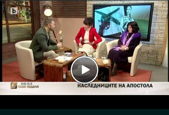

<!DOCTYPE html>
<html>
<head>
    <title>Emission</title>
    <link href="06.WebEmission.css" rel="stylesheet" />
</head>
<body>
    <aside>
        <header>
            <ul>
                <li id="selected">
                    Новините
                </li>
                <li>
                    Спорт
                </li>
                <li>
                    Емисии
                </li>
                <li>
                    Любопитно
                </li>
                <li>
                    Аз, репортерът
                </li>
                <li>
                    Tази сутрин
                </li>
            </ul>
        </header>
        <section>
            <table>
                <tr>
                    <td id="selected-news">
                        Интернет новини - 13.07.2010 г.
                    </td>
                </tr>
                <tr>
                    <td>
                        Промени в учебните програми по история - едва след публично обсъждане
                    </td>
                </tr>
                <tr>
                    <td>
                        Впечатляваща благотворителна акция във Филипините
                    </td>
                </tr>
                <tr>
                    <td>
                        Няма заявен интерес за застрояването на Карадере или Силистар
                    </td>
                </tr>
            </table>
        </section>
        <figure>
            
        </figure>
    </aside>
</body>
</html>
